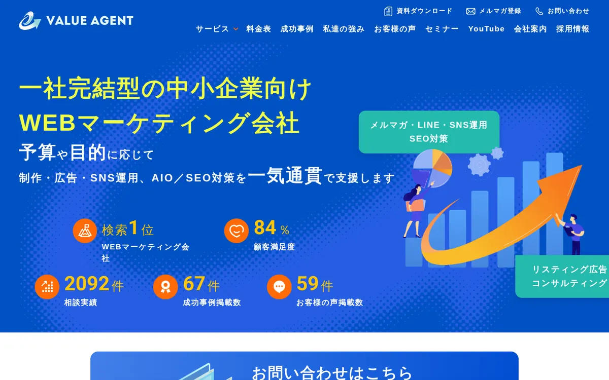
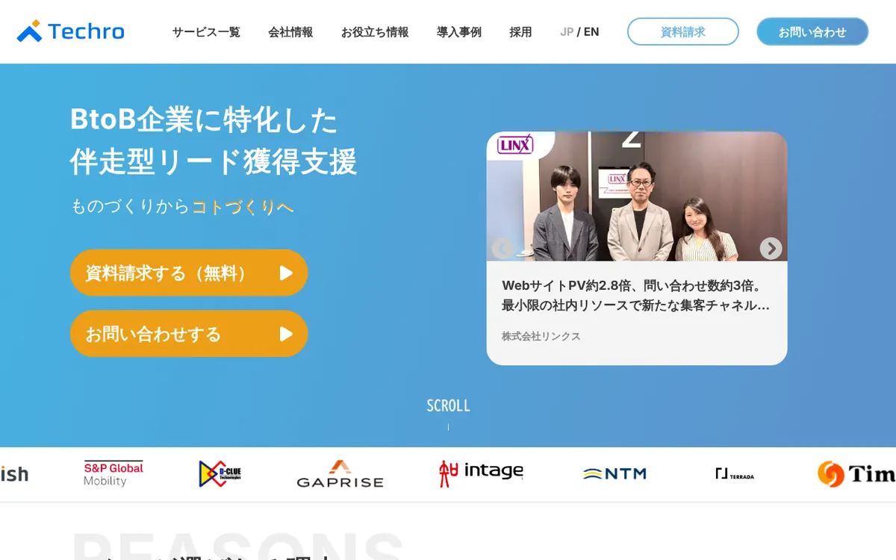
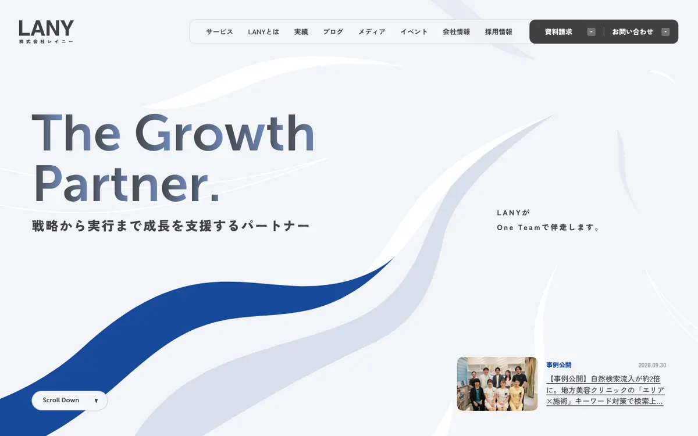
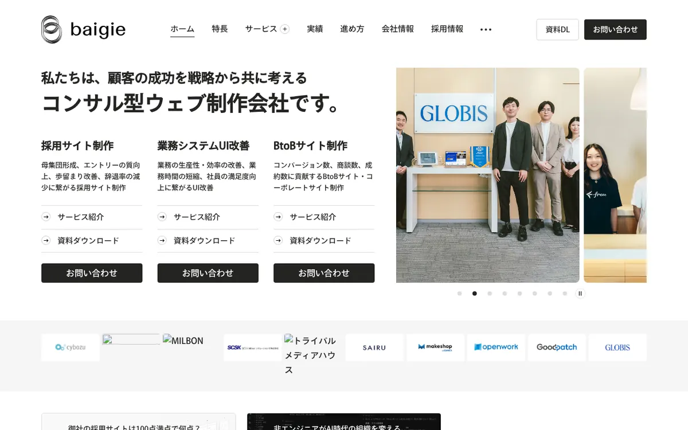

この記事でわかること
- Webマーケティング会社おすすめ6社の比較表（タイプ・料金・支援範囲・契約期間・公開事例）
- 6社それぞれの特徴・向いているケース・注意点（公式サイトのリンク付き）
- 料金の出し方4種類と、公開値だけで試算した小さく始める場合の月額
- 「公開なし」の読み方と、公式ページだけで比べられる範囲
- 同じ条件で見積もりを取るための依頼文6項目と、確認する7項目
Webマーケティング会社とは？依頼先は4つのタイプに分かれる
結論から言うと、「Webマーケティング会社」と名乗っていても、会社ごとに出自が違い、得意な領域も料金の出し方もまるで違います。広告運用から始まった会社、SEOとコンテンツ制作から始まった会社、Web制作から戦略へ広がった会社、戦略の相談役として入る顧問型の会社。同じ「おすすめ」の一覧に並んでいても、頼める中身は別物です。
そこでこの記事では、会社を「何が強いか」で並べる前に、まず出自のタイプで整理します。そのうえで、公式ページで確認できた料金・支援範囲・契約期間・公開事例を、同じ表に並べました。
| タイプ | 主な出自 | 得意になりやすい領域 | 見積もりで確認したい点 |
|---|---|---|---|
| 広告運用型 | 運用型広告の代行 | リスティング・SNS広告などの運用と改善 | 手数料率、最低額、広告費の扱い |
| SEO・コンテンツ型 | SEO、記事制作 | 検索流入の設計、記事・ホワイトペーパー制作 | 記事本数、成果の測り方、AI検索（LLMO）への対応 |
| 制作・サイト改善型 | Web制作、UI/UX | サイトの戦略設計、リニューアル、CVR改善 | 制作費と公開後の運用費の線引き |
| 顧問・戦略型 | 経営・事業側の支援 | 施策の優先順位づけ、KPI設計、外注先への指示 | 実作業が含まれるか、定例の頻度 |
この線引きは、広告代理店を選ぶ場面でも役に立ちます。広告運用に絞った比較はWeb広告代理店の選び方｜失敗しないために見るべきポイント10選、顧問に絞った比較はマーケティング顧問おすすめ6選｜費用・範囲を比較で扱っています。この記事は、その手前の「Webマーケティング全般をまとめて任せられる会社を探している」段階の方に向けた比較です。
Webマーケティング会社おすすめ6社の比較表
ここからは、2026年10月16日時点で各社の公式ページを実際に開いて確認できた内容だけを並べます。公開されていない項目は「公開なし」「記載なし」と書き、推測では埋めていません。順位は付けていません。掲載順は、広告運用型から顧問・戦略型へ向かうおおまかな並びで、当社は先頭に置いています。
比較の前に。料金を載せている会社と、載せていない会社が混在しています。載せていない会社が高い・安いという意味ではありません。表では「公開なし」と「公開あり」を並べ、どこまで公式ページだけで比べられるかそのものが分かるようにしました。
| 会社（公式ページ） | タイプ・得意領域 | 料金（公開値） | 支援範囲 | 契約期間 | 公開されている事例 |
|---|---|---|---|---|---|
| LnX合同会社 （マーケティング顧問制度） |
顧問・戦略型（東京） | アドバイザリー月8万円／グロース伴走月15万円／マーケティング責任者月30万円／CMO代行月50万円〜（個別設計）。税別想定 | 戦略・KPI設計、数値・施策レビュー、広告・SNS・LP・CRMの分析、月次改善レポート、社内担当者・外注先への指示。広告運用の実作業、LP・Web制作、バナー・動画制作などは別見積もり | 原則3か月（1か月目に現状分析と方針設計） | 支援実績ページで売上・LTV・CPA・フォロワー数などを公開 |
| 株式会社バリューエージェント | 広告運用・SEO・制作まで幅広い（大阪） | 広告運用代行は広告費の20%（最低5万円）／Web運用代行は月15万円〜／Webコンサルは月5〜30万円／SEO対策運用は月7万円〜／LP制作は制作費75万円〜／ホームページ制作は制作費300万円〜 | インターネット広告、Webマーケティング、ホームページ制作、SEO、研修、MEOなど6区分 | 料金ページに記載なし | 問い合わせ数3倍以上など、個別の事例を掲載（成果を確約するものではないと明記） |
| テクロ株式会社 | BtoB向けのSEO・LLMO・MA/SFA（東京） | 基本プランは「40万円/月額」、オプションは「4万円〜/月額」と記載。どのプランがどの金額かは公開なし | LLMO/AIO対策、リード獲得（テクニカルSEOとコンテンツSEO）、HubSpot導入・活用、BtoBマーケeラーニング。記事・メルマガ・ホワイトペーパー・LP制作はオプション | 記載なし | 導入事例を複数掲載。PVや問い合わせ数の増加を紹介 |
| ナイル株式会社 | SEO・LLMOコンサル、コンテンツ制作（東京） | 公開なし | SEOコンサルティング、LLMO（AI検索対策）コンサルティング、コンテンツ制作代行 | 記載なし | 今回確認したページでは確認できず |
| 株式会社LANY | 戦略・戦術・制作・運用を一気通貫（東京） | 公開なし | 戦略（コンサル）、戦術（SEO・広告・UI/UX・YouTube・SNS・LLMO）、制作（記事・LP・サイト）、運用（BPO・ウェビナー・メルマガ） | 記載なし | SEO・LLMOの事例を3件掲載（OANDA証券、プラスアルファ・コンサルティング、Leap美容クリニック） |
| 株式会社ベイジ | コンサル型のWeb制作（東京） | 公開なし | 制作前に約2か月の調査・戦略立案・要件定義。コーポレート・採用・BtoBサイト制作、業務システムのUI/UX、専任ライターによるコンテンツ制作 | 記載なし | 顧客満足度4.53（31プロジェクト・74回の評価の5段階平均）、採用サイトのエントリー数1.5倍などを掲載 |
※ 各社の情報は2026年10月16日に公式ページを確認したものです。料金・支援範囲は改定される可能性があるため、発注前に必ず各社にご確認ください。税込・税別の表記は各社で異なり、公式ページに明記がないものは表記を省いています。順位付けは行っておらず、掲載順は当社を先頭に、以降はタイプ別のおおまかな並びです。
当社の条件も、他社と同じ粒度で載せておきます。当社のマーケティング顧問制度は、代表が担当者に引き継がず直接支援する形で、料金は月8万円（アドバイザリープラン：月1回定例・数値と施策のレビュー・改善提案とチャット相談）、月15万円（グロース伴走プラン：月2回定例・KPIと施策設計・月次改善レポート）、月30万円（マーケティング責任者プラン：戦略策定・予算案設計・社内外への指示・経営陣への月次報告）の3段階で、いずれも税別想定です。最低契約期間は原則3か月で、1か月目に現状分析と方針設計を行い、2か月目以降に実行・改善へ進みます。他社の提案書や見積もりを並べた状態でのご相談も歓迎です。
噛み合わない領域も正直に書きます。当社は戦略・数値分析・施策設計・ディレクションまでが顧問料の範囲で、広告運用の実作業やLP・Web制作は別見積もりです。実務まで丸ごと1社に任せたい場合、SEO記事を月何十本も量産したい場合、BtoB特化のMA/SFA導入まで任せたい場合は、上の表の他社のほうが条件に合う可能性があります。
6社それぞれの特徴を個別に見る
表だけでは、各社がどこまでを担当し、どこから先は別の手当てが要るのかまでは分かりません。ここからは1社ずつ、公式サイトで確認できた特徴・向いているケース・注意点を整理します。繰り返しになりますが順位ではありません。
LnX合同会社

公式サイト：https://lnx.co.jp/ ／ サービスページ：マーケティング顧問制度
当社です。他社と同じ粒度で書きます。特徴は、マーケティング会社の代表が担当者に引き継がず直接支援する点と、顧問を「戦略だけ」に閉じず、広告・SNS・LP・CRMの分析と、社内担当者や外注先への具体的な指示まで含める点です。代表は上場事業会社での人材紹介サービスのWebマーケティング責任者を経験しており、戦略から実行まで広く担当してきました。
料金は月8万円・15万円・30万円の3プランで、CMO代行は月50万円〜の個別設計です。広告費・制作費・ツール利用料などの実費は含まれず、成果や売上を保証するものではありません。実務そのものが必要な場合は、外注先の提案も可能です。
向いているケース：専任のマーケ責任者を置くほどの予算はないが、施策の優先順位と外注先への指示を任せたい。複数の会社の提案を、どれが自社に合うか判断してほしい。
注意点：支援社数や体制の大きさでは大手に及びません。実作業の代行、SEO記事の大量制作、BtoB特化のMA/SFA構築は想定していません。他社の提案書や見積もりを並べた状態でのご相談も歓迎です。
株式会社バリューエージェント

公式サイト：https://valueagent.co.jp/ ／ サービスページ：料金表・サービス一覧｜株式会社バリューエージェント
2005年設立、本社は大阪府大阪市です。今回の6社の中で、サービスごとの料金をもっとも細かく公開しているのがこの会社です。広告運用代行は広告費の20%（最低5万円）、Webコンサルティングは月5〜30万円、SEO対策運用（中小企業向け）は月7万円〜、ランディングページ制作は制作費75万円〜といった具合に、メニュー別に金額が並んでいます。
サービス区分はインターネット広告、Webマーケティング、ホームページ制作、SEO対策、研修・セミナー、その他（MEOなど）の6つです。公式トップには相談実績2,092件・顧客満足度84%といった数字も載っていますが、成果を確約するものではないという注記があります。対象は中小企業が中心とされ、全国・海外の顧客も対応可能と書かれています。
向いているケース：広告・SEO・サイト改善を1社にまとめたい。メニューごとの金額を見て、必要な分だけ選びたい。
注意点：料金ページに契約期間・初期費用の記載はありません。メニューが多いため、自社に必要な組み合わせでいくらになるかは見積もりで確認してください。
テクロ株式会社

公式サイト：https://techro.co.jp/ ／ サービスページ：サービス一覧｜テクロ株式会社
2016年10月設立、東京都渋谷区の会社です。公式ページの事業内容はBtoBマーケティング支援、LLMO/AIO対策支援、SEO・オウンドメディア支援、HubSpot導入・活用支援、マーケティング人材育成などで、対象はBtoB企業です。基本プランはLLMO/AIO対策支援、リード獲得支援（テクニカルSEOとコンテンツSEOの両面から分析）、HubSpot導入・活用設計、BtoBマーケeラーニングの4つで、記事ライティング・メルマガ・ホワイトペーパー・LP制作・インサイドセールス代行がオプションとして並びます。
料金は「40万円/月額」（基本プラン）と「4万円〜/月額」（オプション）の記載がありますが、どのプランやオプションがどの金額に当たるかはサービスページからは分かりません。サイトには「顧客満足度90％以上」などの表記もありますが、根拠となるデータは同じページには示されていません。
向いているケース：BtoBで、リード獲得からMA/SFA、インサイドセールスまでつなげたい。AI検索対策もSEOと並べて相談したい。
注意点：BtoC中心の店舗ビジネスなどでは対象外になりやすい構成です。金額と内容の対応は、見積もりで書面確認が必要です。
ナイル株式会社

公式サイト：https://nyle.co.jp/ ／ サービスページ：事業紹介｜ナイル株式会社
2007年1月設立、東京都品川区の会社です。公式ページでは、DX＆マーケティング領域としてSEOコンサルティング、LLMO（AI検索対策）コンサルティング、コンテンツ制作代行を掲げています。そのほか、メディア＆ソリューション、自動車産業DXといった事業も展開しています。
今回確認したページでは、料金・契約期間・支援対象の企業規模は確認できませんでした。そのため、ここでは「公開なし」としています。SEOとAI検索対策を軸に、記事制作まで任せたい会社が、見積もりを依頼して中身を確認する相手として挙がる位置づけです。
向いているケース：SEOとLLMO対策を、コンサルティングとコンテンツ制作の両面で相談したい。
注意点：料金・契約期間が今回確認したページでは分からないため、予算が決まっている場合は先に目安を聞いてください。
株式会社LANY

公式サイト：https://www.lany.co.jp/ ／ サービスページ：デジタルマーケティングサービス｜株式会社LANY
2020年10月設立、東京都渋谷区の会社です。デジタルマーケティングのサービスを戦略・戦術・制作・運用の4領域で整理しているのが特徴です。戦略ではデジタルマーケティングとBtoBマーケティングのコンサルティング、戦術ではSEO・Web広告・UI/UX・YouTube・SNS運用・LLMOのコンサルティング、制作では記事・事例インタビュー・ホワイトペーパー・LP・サイト、運用ではマーケティングBPO・ウェビナー運営・メルマガ運用を挙げています。
公開事例は3件で、同社の掲載内容では、OANDA証券がSEOで高ボリュームのキーワードで1位を獲得し自然流入が約4倍、プラスアルファ・コンサルティングがLLMOで生成AIからの推奨率が3か月で59%から85%、Leap美容クリニックがSEOで自然流入が約2倍と紹介されています。いずれも各社の公開事例で、同じ条件で再現できる数字ではありません。料金と契約期間はサービスページに記載がありません。
向いているケース：戦略から制作・運用まで同じ会社に任せたい。SEOとLLMOを並べて見てほしい。
注意点：サービスの幅が広い分、自社に必要な範囲を絞らないと見積もりが膨らみます。料金は公開されていないため、依頼前に上限を伝えてください。
株式会社ベイジ

公式サイト：https://baigie.me/ ／ サービスページ：コンサル型ウェブ制作｜株式会社ベイジ
2010年創業のWeb制作会社で、自社を「戦略から共に考えるコンサル型ウェブ制作会社」と説明しています。制作に入る前に約2か月かけて調査・戦略立案・要件定義を行う点と、専任ライターによるコンテンツ制作を掲げている点が特徴です。広告運用やSEOの代行が中心の会社ではなく、サイトそのものを戦略から作り直すタイプです。
公式ページには、顧客満足度4.53（31プロジェクト・計74回の顧客評価の5段階平均）、採用サイトの新卒説明会エントリー数が前年比1.5倍、業務システムの自然検索流入が10倍といった実績が掲載されています。料金・契約期間はトップページに記載がありません。
向いているケース：集客の前に、サイトの設計そのものを見直したい。BtoBサイトや採用サイトを戦略から作りたい。
注意点：広告運用や月次の継続運用を任せたい会社とは、役割が違います。制作後の運用を誰が担うかを先に決めてください。
料金の出し方は4種類。同じ金額でも中身が違う
6社の公開値を見比べると、料金の出し方が会社によって違うことが分かります。月額に直せるものもあれば、広告費に対する割合のもの、制作費として一括のもの、そもそも公開されていないものもあります。
| 料金の出し方 | 今回の例 | 比べるときの注意 |
|---|---|---|
| 広告費に対する手数料率 | バリューエージェントの広告運用（20%・最低5万円） | 広告費が増えるほど手数料も増える。最低額が効く金額帯を確認する |
| 月額の固定料金 | バリューエージェントのSEO運用・Webコンサル、テクロの基本プラン、LnXの顧問 | 含まれる作業量が会社ごとに違う。対象外の作業を確認する |
| 制作費の一括 | バリューエージェントのLP制作・ホームページ制作 | 公開後の運用費が別になる。保守・改修の費用も確認する |
| 非公開（要見積もり） | ナイル、LANY、ベイジ | 同じ条件を伝えて比べる。上限予算を先に示す |
参考までに、公開値だけで「小さく始める場合」を計算してみます。これは各社の料金ページの下限値を足しただけの試算で、実際の見積もりとは一致しません。月の広告費を30万円とした場合の、バリューエージェントの公開値の組み合わせは次のとおりです。
| 項目 | 公開値 | 月額の試算 |
|---|---|---|
| 広告運用代行（広告費30万円） | 広告費の20%（最低5万円） | 6万円（30万円×20%） |
| SEO対策運用 | 月額7万円〜 | 7万円〜 |
| Webコンサルティング | 月額5〜30万円 | 5万円〜 |
| 合計（下限） | 月18万円〜（半年で108万円〜） | |
このほかに広告費の30万円がかかります。逆にいえば、広告費を含めた月の総額は48万円〜で、手数料や運用費はそのうちの4割弱です。会社を選ぶ前に、「広告費を除いた月の支援費用の上限」を決めておくと、どのタイプの会社に相談するかが絞れます。費用の考え方はマーケティング予算の決め方と配分の目安にまとめています。
「公開なし」の読み方。公式ページだけで比べられる範囲
今回の6社のうち、公式ページで料金を確認できたのは、バリューエージェント、テクロ（金額と内容の対応は不明）、当社の3社です。契約期間を確認できたのは当社だけでした。残りの会社は、掲載がないというだけで、料金が高いとも契約が長いとも判断できません。
| 確認項目 | 公式ページで確認できた会社 | 確認できなかった会社 |
|---|---|---|
| 料金 | LnX、バリューエージェント（テクロは金額のみ） | ナイル、LANY、ベイジ |
| 契約期間 | LnX（原則3か月） | 他の5社（今回確認したページでは記載なし） |
| 対象外の作業 | LnX（広告運用の実作業・制作などは別見積もり） | 他の5社（含まれるものの記載はあるが、含まれないものの記載は確認できず） |
| 事例の数値 | LnX、バリューエージェント、テクロ、LANY、ベイジ | ナイル（今回確認したページでは確認できず） |
ここから分かるのは、最初の問い合わせで聞くべきことは、会社ごとに違うということです。料金が非公開の会社には、まず予算感と最低契約期間を聞く。料金が公開されている会社には、含まれる作業と対象外の作業を聞く。この順番にすると、初回の打ち合わせで無駄が減ります。
同じ条件で見積もりを取るための依頼文
複数社に見積もりを頼むときは、各社に別々の説明をすると、提案の違いが「会社の差」なのか「伝えた条件の差」なのか分からなくなります。次の6項目を、同じ文面で各社に伝えてください。
見積もり依頼で、各社に同じ文面で伝える6項目
自社の状況
- 現在の売上と、集客チャネルごとの数字（広告・検索・SNS・紹介など）
- 社内の担当者の有無と、そのかける時間（週に何時間か）
- 直近で止まっている判断や、成果が出ていない施策
条件
- 広告費を除いた、月の支援費用の上限
- 依頼したい期間（まず3か月、半年など）と、途中で見直す条件
- 任せたい範囲と、自社で持ちたい範囲（実作業・判断・数字の管理など）
返ってきた提案書では、「最初の1か月に何をいつまでに出すか」が具体的に書かれているかを見てください。月額だけが書かれていて、最初の1か月の成果物が曖昧な提案は、比較しにくくなります。依頼前の整理はWebマーケティング会社に相談する前に整理すべきこと｜チェックリスト付きも参考になります。
提案書と見積もりで確認する7項目
- 含まれる作業と、対象外の作業：広告の入稿、記事制作、サイト改修などが月額に入るのか、別料金か
- 担当者は誰か：営業に出てきた人が実際に担当するのか、別の担当に引き継がれるのか
- 自社の業種・規模での支援経験：BtoBかBtoCか、店舗か通販かなど、近い事例があるか
- 最初の1か月の成果物：現状分析、KPI設計、優先順位表など、形に残るものがあるか
- 成果の測り方：何の数字を、誰が、どの頻度で報告するか
- 契約期間・解約条件：最低期間、途中解約の可否、自動更新の有無
- 自社側に必要な工数：データ提供、定例への出席、施策の実行を誰がどれだけ負担するか
契約の形（準委任・請負・成果報酬・顧問）によって、成果物の責任や費用の払い方が変わります。違いはWebマーケティング支援の契約形態はどう選ぶ？準委任・請負・成果報酬・顧問契約の違いと向き不向きで整理しています。契約書の個別の条文については、弁護士等の専門家に確認してください。
自社の状況別に、どのタイプが合うか
| 自社の状況 | 合いやすいタイプ | 該当する会社（掲載順） |
|---|---|---|
| 広告・SEO・サイト改善を1社にまとめたい | 幅広いメニューを持つ会社 | バリューエージェント、LANY |
| BtoBで、リード獲得からMA/SFAまでつなげたい | BtoB特化のSEO・MA支援 | テクロ、LANY |
| SEOとAI検索対策を軸に、記事制作まで任せたい | SEO・LLMOコンサル＋コンテンツ制作 | ナイル、LANY、テクロ |
| 集客の前に、サイトの設計を見直したい | コンサル型の制作会社 | ベイジ |
| 専任責任者はいないが、優先順位と外注先への指示を任せたい | 顧問・責任者代行型 | LnX |
1つの会社が複数の行に当てはまるのは、各社の提供範囲が重なるためです。最終的には、同じ条件を2〜3社に伝えて、提案書の具体性を比べるのがもっとも確実です。選び方の全般的な観点はWebマーケティング支援会社の選び方｜依頼前に見るべきポイントでも解説しています。
LnXの見解
Webマーケティング会社選びでいちばん大切なのは、「会社の良し悪し」より先に、自社が頼みたいのは判断なのか、実作業なのかを分けることだと考えています。広告の運用、記事の制作、サイトの改修といった実作業は、得意な会社に任せたほうが早く進みます。一方で、何から手を付けるか、どこで止めるかという判断は、外注先の数が増えるほど社内で決めにくくなります。
当社が顧問という形で支援しているのは、この判断の部分です。当社が顧問契約として行った事例ではありませんが、判断の仕方がよく表れている支援実績があります。保険代理店のインフルエンサー集客で、成果ゼロの状態から、成果を「人数×1人あたり訴求回数×訴求CVR」にKPI分解し、報酬体系の見直しと訴求テンプレートの整備に絞って再設計しました。半年で売上600万円以上UPという結果です（成果報酬型の支援事例で、顧問契約の成果ではありません）。

実作業の量を期待するなら、運用代行やSEO会社、制作会社への依頼が合います。比較表の会社の中から、自社の状況に合う2〜3社に同じ条件で見積もりを依頼してください。そのとき、複数の提案書を見て「どれが自社の優先順位に合っているか」を一緒に整理する役割が必要であれば、当社の無料相談もご利用いただけます。
よくある質問
Q Webマーケティング会社と広告代理店は、何が違いますか？
広告代理店は広告の運用が中心で、Webマーケティング会社はSEO、サイト改善、SNS、コンテンツ制作など広告以外も含めて支援するのが一般的です。ただし、名乗りと実態が一致しない会社もあるため、見積もりで対応範囲を必ず確認してください。広告だけで足りるなら、広告運用に強い代理店のほうが細かく見てもらえます。
Q 月の予算が10万円前後でも依頼できますか？
依頼自体は可能ですが、できる範囲は限られます。広告運用は広告費の20%で最低5万円のような条件の会社もあるため、広告費が小さいと手数料の比率が高くなります。顧問やコンサルティングを月数万円から出している会社もありますが、実作業は含まれないのが一般的です。予算の上限を先に伝えて、含まれる作業を書面で確認してください。
Q 料金を公開していない会社は避けたほうがいいですか？
非公開であること自体は、高い・信頼できないという意味ではありません。支援内容が案件ごとに変わるため、見積もりで出す会社も多くあります。ただし、同じ条件を複数社に伝えて見積もりを比べることが前提になります。予算の上限を先に示し、最初の1か月の成果物と月額の内訳を書面で出してもらってください。
Q 複数の会社に分けて頼むのと、1社にまとめるのは、どちらがよいですか？
広告・SEO・サイト改善を1社にまとめると窓口は減りますが、全領域が得意な会社は少なく、領域ごとに質が違うことがあります。分けると専門性は得やすい反面、全体の優先順位を決める人が必要になります。分ける場合は、顧問や社内の責任者が全体を見る体制を先に決めてください。
Q 契約期間はどのくらいが一般的ですか？
今回確認した公式ページでは、契約期間を明記していたのは当社の原則3か月だけでした。他の会社は掲載がなく、見積もり時の確認が必要です。期間の長さより、最初の1か月で何が成果物として出るか、途中解約の条件、自動更新の有無を確認してください。
Q 公式ページの実績の数字は、そのまま信じてよいですか？
各社が自社で公開している数字なので、参考にはなりますが、そのまま自社に当てはまるとは限りません。業種・予算・開始時の状態によって結果は変わります。「どの期間で、何を、どの状態から」動かした数字かを確認し、近い条件の事例があるかを質問してください。